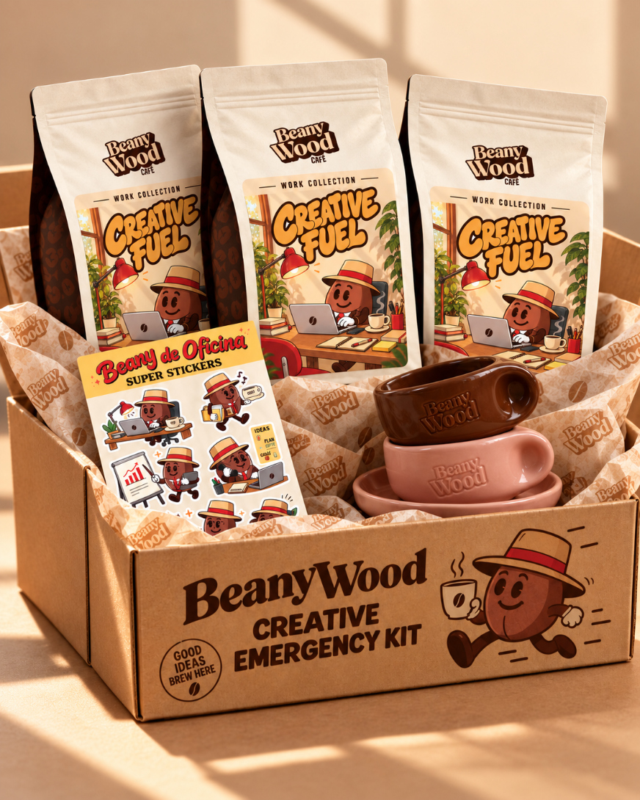
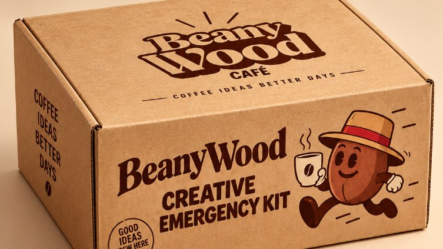

Creative Emergency Kit
"Cuando falten ideas, que no falte café."
Una caja pensada para instalar Beanywood de forma permanente en la oficina.
El café se convierte en parte de la rutina diaria del equipo y se acompaña de papelería, stickers y pequeñas sorpresas que refuerzan la experiencia de marca.
Además, cada empleado recibe ventajas exclusivas para seguir disfrutando de Beanywood también en casa.